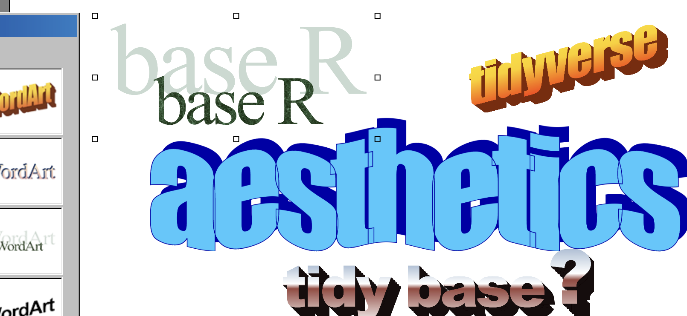
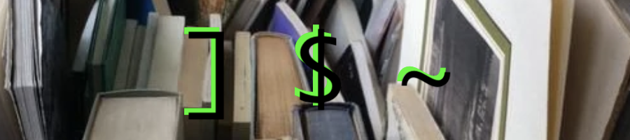
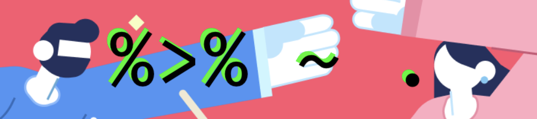

{kind=link}
suppressPackageStartupMessages(library(dplyr))
sw_a <- starwars[, c("name", "species", "height")]
sw_b <- starwars[, c("name", "homeworld")]
tl;dr
Some people look at an R script and see code. But I feel something.
A philosophy
Have you experienced the Aesthetics Wiki?
It’s missing R-related entries for some reason, which definitely fit the aesthetic philosophy of having:
perspectives on beauty and the human condition and a political, economic, or social statement
Tell me you don’t look at an R script and get an immediate vibe.
I want to suggest two obvious aesthetics for submission to the wiki—Basecore and Tidywave—and to introduce the definitely-soon-to-be-mainstreamed V4 Punk1.
The addendum
Basecore

Overview
- History: emerged as Base Academic in 1993, mainstreamed as Base Core from 2000 to date.
- Visuals:
[(square-bracket selector),$(dollar selector),~(formula-form tilde). - Palette: grey.
- Fashion: Emacs, mailing lists, a wired mouse with a ball in it.
- Nearest aesthetic: Chaotic Academia, which ‘acknowledges the pretentiousness of classic academia, subtly mocking it at times’.
Sample
Classic stuff. Typical base-R code uses a lot of intermediate assignment to create temporary objects for further manipulation. Many actions make use of square bracket notation to indicate some action over rows and columns of a data.frame. Data.frame columns have to be called within the context of the data.frame they belong to, using dollar or square-bracket notation. The tilde is used for formula notation (‘this given that’).
Set up demo data
x <- sw_a[sw_a$species == "Human", names(sw_a) != "species"]
x <- merge(x, sw_b, by = "name")
x$height <- x$height / 100
x$homeworld <- ifelse(
!x$homeworld %in% c("Tatooine", "Naboo"),
"Other",
x$homeworld
)
x <- aggregate(x, height ~ homeworld, mean, na.rm = TRUE)
x <- x[order(-x$height), ]
x homeworld height
3 Tatooine 1.792500
2 Other 1.776471
1 Naboo 1.772000Tidywave

{kind=link}
Overview
- History: humble academic origins in 2008, later popularised with the creation of the {tidyverse} in 2016.
- Visuals:
%>%({magrittr} pipe),.(data placeholder),~(lambda function). - Palette: Posit blue, yellow, and grey.
- Fashion: RStudio, hex stickers, rapid deprecation.
- Nearest aesthetic: Corporate Memphis because I’ve literally seen it in Posit marketing.
Sample
The script reads from left-to-right and top-to-bottom, recipe style, using pipes: ‘take dataset, then do a thing, then do a thing’, etc. Each function is verb that indicates its action. Non-standard evaluation is rampant. A tilde replaces the tedious typing of function(). A titchy inconspicuous . acts as a data placeholder on the right-hand side of a pipe.
sw_a %>%
filter(species == "Human") %>%
select(-species) %>%
left_join(sw_b, by = "name") %>%
mutate(
height = height / 100,
homeworld = if_else(
!homeworld %in% c("Tatooine", "Naboo"),
"Other",
homeworld
)
) %>%
summarise(
height = mean(height, na.rm = TRUE),
.by = homeworld
) %>%
arrange(desc(height))# A tibble: 3 × 2
homeworld height
<chr> <dbl>
1 Tatooine 1.79
2 Other 1.78
3 Naboo 1.77V4 Punk
{kind=link}
Overview
- History: incremental emergence following R version 4.0 in 2020, boosted greatly in 2022 with the release of the base pipe.
- Visuals:
|>(base pipe),_(data placeholder),\()(lambda function). - Palette: rainbow?
- Fashion: hubris, moustaches, troll-face emojis.
- Nearest aesthetic: Vacation Dadcore, so you can ‘escape to a simpler time without sacrificing any of the fun’.
Sample
Hear me out: what if tidyverse, but made entirely of base R functions2? This is now possible with the base pipe and by using obscure functions that help you avoid square brackets3. It’s also sketchy as heck; just see the help files for subset() (‘unanticipated consequences’) and transform() (‘you deserve whatever you get!’). The death of Basecore and Tidywave, for sure.
sw_a |>
subset(
species == "Human",
select = -species
) |>
merge(sw_b, by = "name") |>
transform(
height = height / 100,
homeworld = ifelse(
!homeworld %in% c("Tatooine", "Naboo"),
"Other",
homeworld
)
) |>
aggregate(
height ~ homeworld,
\(x) mean(x, na.rm = TRUE)
) |>
sort_by(~ height, decreasing = TRUE) # hot off the v4.4 press homeworld height
3 Tatooine 1.792500
2 Other 1.776471
1 Naboo 1.772000Can’t wait to see this roll out into production code.
Environment
Session info
Last rendered: 2024-05-08 23:33:15 BSTR version 4.4.0 (2024-04-24)
Platform: aarch64-apple-darwin20
Running under: macOS Ventura 13.2.1
Matrix products: default
BLAS: /Library/Frameworks/R.framework/Versions/4.4-arm64/Resources/lib/libRblas.0.dylib
LAPACK: /Library/Frameworks/R.framework/Versions/4.4-arm64/Resources/lib/libRlapack.dylib; LAPACK version 3.12.0
locale:
[1] en_US.UTF-8/en_US.UTF-8/en_US.UTF-8/C/en_US.UTF-8/en_US.UTF-8
time zone: Europe/London
tzcode source: internal
attached base packages:
[1] stats graphics grDevices utils datasets methods base
other attached packages:
[1] dplyr_1.1.4
loaded via a namespace (and not attached):
[1] digest_0.6.35 utf8_1.2.4 R6_2.5.1 fastmap_1.1.1
[5] tidyselect_1.2.1 xfun_0.43 magrittr_2.0.3 glue_1.7.0
[9] tibble_3.2.1 knitr_1.46 pkgconfig_2.0.3 htmltools_0.5.8.1
[13] rmarkdown_2.26 generics_0.1.3 lifecycle_1.0.4 cli_3.6.2
[17] fansi_1.0.6 vctrs_0.6.5 withr_3.0.0 compiler_4.4.0
[21] rstudioapi_0.16.0 tools_4.4.0 pillar_1.9.0 evaluate_0.23
[25] yaml_2.3.8 rlang_1.1.3 jsonlite_1.8.8 Footnotes
These suffixes are meaningful: core ‘implies a system, a set of rules’, wave ‘a significant shift within a genre’ and punk ‘reject[s] social norms’.↩︎
I called this ‘The Modern Base Aesthetic’ in my talk, ‘Base Slaps!’, at the NHS-R conference 2023. But now I realise the aesthetics run deeper.↩︎
If you truly want something that looks like {dplyr} code but depends only on base R, then check out the {poorman} package.↩︎
Reuse
CC BY-NC-SA 4.0